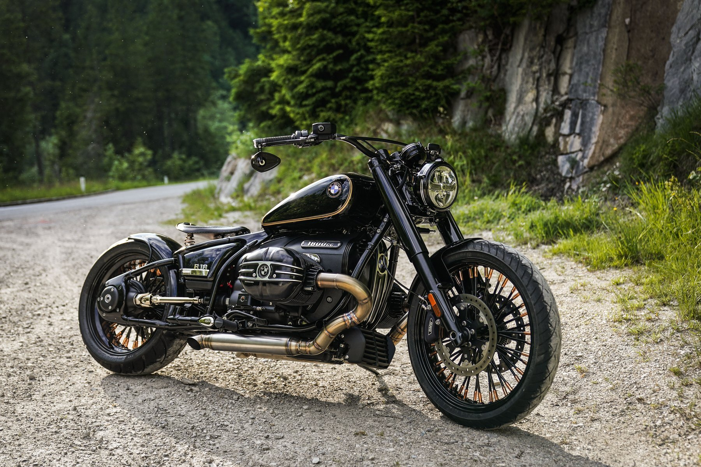
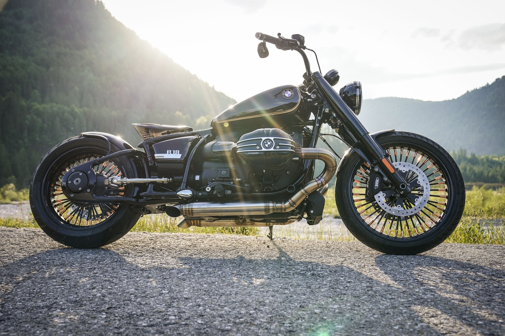
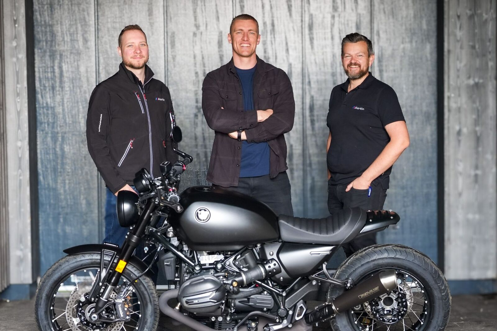
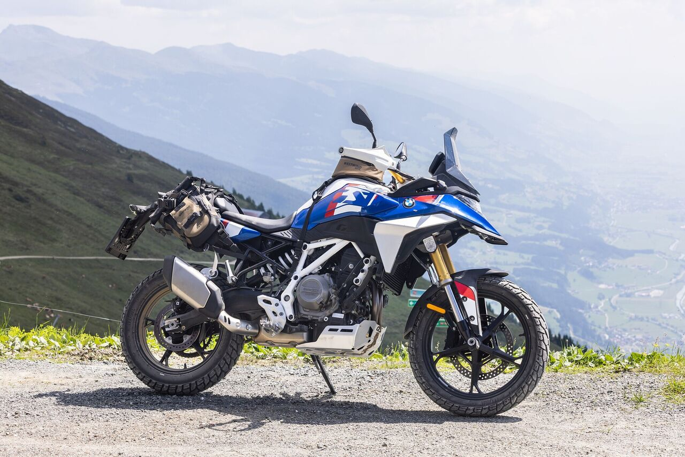

Dreimal Schwarz, einmal Licht. Auspuff schwarz matt, Unterfahrschutz, LED-Zusatzscheinwerfer.
@motorrad_martin
Manufaktur Weyarn1 / 5
Was in einerMartin Editionsteckt.

Wischen →
BMW R 18 Bobber · Nº 202 / 5
01
HattechSidepipe-Auspuff

Martin Edition · Bauteil 1 von 3→
BMW R 18 Bobber · Nº 203 / 5
02
Big Spoke21 Zoll
Martin Edition · Bauteil 2 von 3→
BMW R 18 Bobber · Nº 204 / 5
03
Kennzeichenhalterseitlich
Martin Edition · Bauteil 3 von 3→
Martin Edition5 / 5
Jede Editionein Unikat.
23 Editionen in der Kollektion, gebaut in der Manufaktur in Weyarn. Du willst deine eigene? Wir bauen dein Motorrad nach deinen Wünschen um.
Link in der Bio

Übergabe · WeyarnBMW R 12
Weltklasse trifftBlack Edition.
Bob-Champion Thorsten Margis übernimmt seine BMW R 12 Martin Black Edition, angepasst an seine Wünsche.
Schlüsselmoment
Service · Winter-Wellness1 / 4
Dein Bikeüberwintertbei uns.
Wischen →
Winter-Wellness · Basispaket2 / 4
259€
Komplettpreis für fünf Monate. Jeder weitere Monat 39 Euro.
01Einlagerung 5 Monate
02Fahrzeugwäsche
03Batterieservice und Leistungstest
04Frühjahrscheck
Stand: motorrad-martin.de→
Winter-Wellness3 / 4
Wir holen.Wir bringen.
01Fachgerechte EinlagerungIn trockenen, sauberen und beheizten Hallen.
02BatterieserviceRegelmäßig laden und prüfen, für einen sicheren Start im Frühling.
03Fahrzeug-CheckSichtprüfung von Reifen, Bremsen und Flüssigkeiten.
04Auf Wunsch InspektionFällige Arbeiten ohne Zeitdruck im Winter.
Mit Hol- und Bringservice→
Platz reservieren4 / 4
Ein Anrufgenügt.
WEYWeyarn+49 8020 90450-0
SOGSchongau+49 8861 9300-0
OYOy-Mittelberg+49 8366 98488-0
Link in der Bio
Highlight November · Dezemberbis 31.12.
17 %
auf das Batterie-ladegerät Plus.
Und 15 % auf das Nachrüst-Set Zusatzsteckdose. Damit dein Bike über den Winter fit bleibt.
Aktionszeitraum 01.11.–31.12.2026, nur bei teilnehmenden BMW Motorrad Partnern und solange der Vorrat reicht. Nicht mit anderen Aktionen kombinierbar. Ausgenommen Anbauteile und Einbau.
In allen drei Häusern
Weyarn · Am Weiglfeld 20seit 2022
Home ofMartin Edition.
Rund 3.500 Quadratmeter direkt an der A8. Showroom, Werkstatt und die Manufaktur, in der die Editionen entstehen.
Haus 1 von 3
FamilienbetriebDritte Generation
Seit1954.
Am 1. April 1954 gründet Erwin Martin in Ingenried bei Schongau. Heute: drei Häuser am Alpenrand, in Familienhand.
1954Gründung
1967BMW Vertragshändler
1969BMW Motorräder
1998Allgäu
2022Weyarn
Schongau · Weyarn · Oy

Neu bei BMW MotorradA2-Klasse
F 450 GSTrophy.
Echte GS-Optik und viel vom Charakter der großen Schwester, in der A2-Reiseenduro-Klasse.